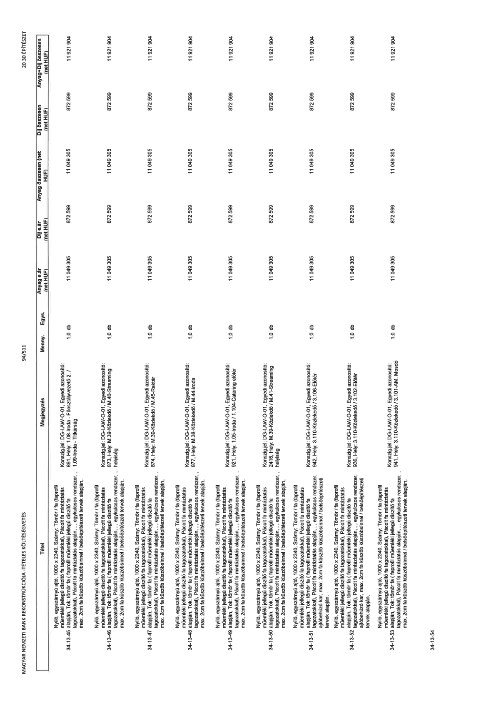

| Tétel | Megjegyzés | Menny. | Egys. | Anyag e.ár (net HUF) | Díj e.ár (net HUF) | Anyag összesen (net HUF) | Díj összesen (net HUF) | Anyag+Díj összesen (net HUF) |
|---|---|---|---|---|---|---|---|---|
| 34-13-45 | Nyíló, egyszárnyú ajtó, 1000 x 2340, Szárny: Tömör / fa (laprofil műemléki jellegű díszítő fa tagozatokkal), Pácolt fa mintázatás alapján, Tok: tömör fa ( laprofil műemléki jellegű díszítő fa tagozatokkal), Pácolt fa mintázatás alapján, , egykulcsos rendszer, max. 2cm fa küszöb küszöbsínnel / belsőépítészeti tervek alapján,; Konszig.jel: DG-LAW-O-01, Egyedi azonosító: 861, Hely: 1.08-Iroda - Főosztályvezető 2. / 1.09-Iroda - Titkárság | 1,0 | db | 11 049 305 | 872 599 | 11 049 305 | 872 599 | 11 921 904 |
| 34-13-46 | Nyíló, egyszárnyú ajtó, 1000 x 2340, Szárny: Tömör / fa (laprofil műemléki jellegű díszítő fa tagozatokkal), Pácolt fa mintázatás alapján, Tok: tömör fa ( laprofil műemléki jellegű díszítő fa tagozatokkal), Pácolt fa mintázatás alapján, , egykulcsos rendszer, max. 2cm fa küszöb küszöbsínnel / belsőépítészeti tervek alapján,; Konszig.jel: DG-LAW-O-01, Egyedi azonosító: 873, Hely: M.39-Közlekedő / M.40-Streaming helyiség | 1,0 | db | 11 049 305 | 872 599 | 11 049 305 | 872 599 | 11 921 904 |
| 34-13-47 | Nyíló, egyszárnyú ajtó, 1000 x 2340, Szárny: Tömör / fa (laprofil műemléki jellegű díszítő fa tagozatokkal), Pácolt fa mintázatás alapján, Tok: tömör fa ( laprofil műemléki jellegű díszítő fa tagozatokkal), Pácolt fa mintázatás alapján, , egykulcsos rendszer, max. 2cm fa küszöb küszöbsínnel / belsőépítészeti tervek alapján,; Konszig.jel: DG-LAW-O-01, Egyedi azonosító: 874, Hely: M.39-Közlekedő / M.41-Raktár | 1,0 | db | 11 049 305 | 872 599 | 11 049 305 | 872 599 | 11 921 904 |
| 34-13-48 | Nyíló, egyszárnyú ajtó, 1000 x 2340, Szárny: Tömör / fa (laprofil műemléki jellegű díszítő fa tagozatokkal), Pácolt fa mintázatás alapján, Tok: tömör fa ( laprofil műemléki jellegű díszítő fa tagozatokkal), Pácolt fa mintázatás alapján, , egykulcsos rendszer, max. 2cm fa küszöb küszöbsínnel / belsőépítészeti tervek alapján,; Konszig.jel: DG-LAW-O-01, Egyedi azonosító: 877, Hely: M.38-Közlekedő / M.44-Iroda | 1,0 | db | 11 049 305 | 872 599 | 11 049 305 | 872 599 | 11 921 904 |
| 34-13-49 | Nyíló, egyszárnyú ajtó, 1000 x 2340, Szárny: Tömör / fa (laprofil műemléki jellegű díszítő fa tagozatokkal), Pácolt fa mintázatás alapján, Tok: tömör fa ( laprofil műemléki jellegű díszítő fa tagozatokkal), Pácolt fa mintázatás alapján, , egykulcsos rendszer, max. 2cm fa küszöb küszöbsínnel / belsőépítészeti tervek alapján,; Konszig.jel: DG-LAW-O-01, Egyedi azonosító: 921, Hely: 1.105-Iroda / 1.104-Catering előtér | 1,0 | db | 11 049 305 | 872 599 | 11 049 305 | 872 599 | 11 921 904 |
| 34-13-50 | Nyíló, egyszárnyú ajtó, 1000 x 2340, Szárny: Tömör / fa (laprofil műemléki jellegű díszítő fa tagozatokkal), Pácolt fa mintázatás alapján, Tok: tömör fa ( laprofil műemléki jellegű díszítő fa tagozatokkal), Pácolt fa mintázatás alapján, , egykulcsos rendszer, max. 2cm fa küszöb küszöbsínnel / belsőépítészeti tervek alapján,; Konszig.jel: DG-LAW-O-01, Egyedi azonosító: 2416, Hely: M.39-Közlekedő / M.41-Streaming helyiség | 1,0 | db | 11 049 305 | 872 599 | 11 049 305 | 872 599 | 11 921 904 |
| 34-13-51 | Nyíló, egyszárnyú ajtó, 1000 x 2340, Szárny: Tömör / fa (laprofil műemléki jellegű díszítő fa tagozatokkal), Pácolt fa mintázatás alapján, Tok: tömör fa ( laprofil műemléki jellegű díszítő fa tagozatokkal), Pácolt fa mintázatás alapján, , egykulcsos rendszer, ajtóbehúzó kar, max. 2cm fa küszöb küszöbsínnel / belsőépítészeti tervek alapján,; Konszig.jel: DG-LAW-O-01, Egyedi azonosító: 942, Hely: 3.110-Közlekedő / 3.106-Előtér | 1,0 | db | 11 049 305 | 872 599 | 11 049 305 | 872 599 | 11 921 904 |
| 34-13-52 | Nyíló, egyszárnyú ajtó, 1000 x 2340, Szárny: Tömör / fa (laprofil műemléki jellegű díszítő fa tagozatokkal), Pácolt fa mintázatás alapján, Tok: tömör fa ( laprofil műemléki jellegű díszítő fa tagozatokkal), Pácolt fa mintázatás alapján, , egykulcsos rendszer, ajtóbehúzó kar, max. 2cm fa küszöb küszöbsínnel / belsőépítészeti tervek alapján,; Konszig.jel: DG-LAW-O-01, Egyedi azonosító: 938, Hely: 3.110-Közlekedő / 3.102-Előtér | 1,0 | db | 11 049 305 | 872 599 | 11 049 305 | 872 599 | 11 921 904 |
| 34-13-53 | Nyíló, egyszárnyú ajtó, 1000 x 2340, Szárny: Tömör / fa (laprofil műemléki jellegű díszítő fa tagozatokkal), Pácolt fa mintázatás alapján, Tok: tömör fa ( laprofil műemléki jellegű díszítő fa tagozatokkal), Pácolt fa mintázatás alapján, , egykulcsos rendszer, max. 2cm fa küszöb küszöbsínnel / belsőépítészeti tervek alapján,; Konszig.jel: DG-LAW-O-01, Egyedi azonosító: 941, Hely: 3.110-Közlekedő / 3.101-AM. Mosdó | 1,0 | db | 11 049 305 | 872 599 | 11 049 305 | 872 599 | 11 921 904 |
| 34-13-54 | NaN | NaN | NaN | 0 | 0 | 0 | 0 | 0 |
